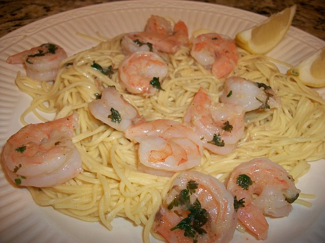

Shrimp Scampi

Easy Peasy Shrimpy Scampi
This buttery lemon and garlic shrimp scampi can be served as a main course or an appetizer, making it a really versatile dish to have in your repertoire. I always serve this simple recipe for guests, and they tell me how gourmet and impressive it is every time.
Ingredients
- Shrimp
- Butter
- Garlic
- Red pepper flakes
- White wine
- Lemon juice
- Parsley
Instructions
- Thaw shrimp
- Melt half a stick of butter in a skillet
- Add shrimp into butter and cook until pink
- Add garlic and red pepper flakes
- Cook until fragrant
- Pour in wine and let it simmer until alcohol is boiled off
- Stir in the rest of the butter, lemon juice, and parsley
- Once the butter melts take it off the heat
- Season with salt and pepper as needed
- Serve with rice, couscous, or your pasta of choice